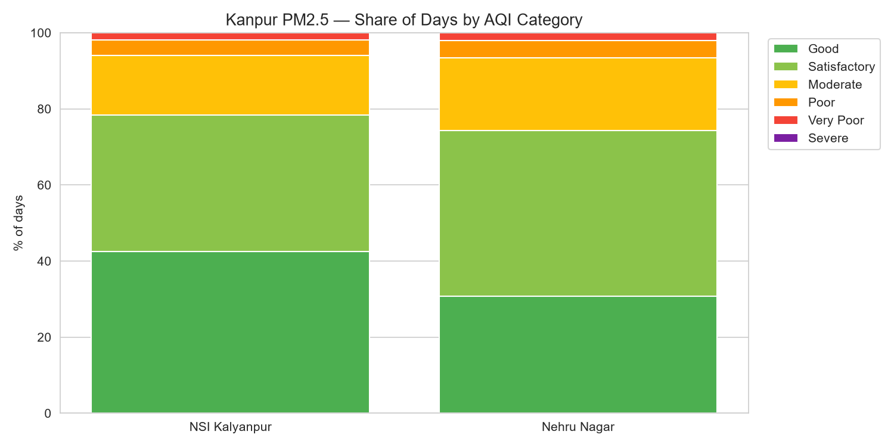
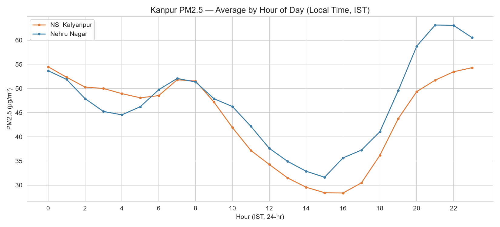
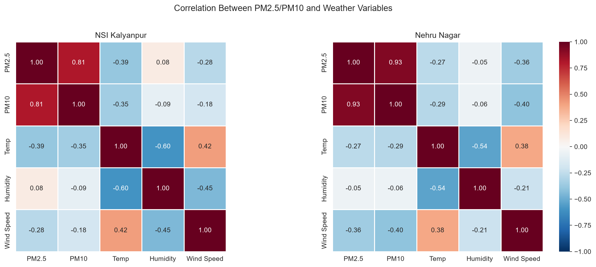
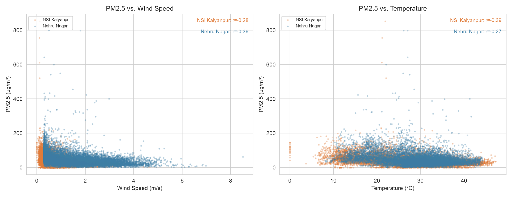
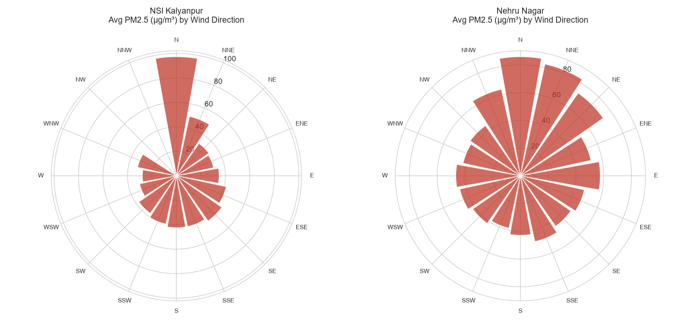

1. Multi-Year Timeseries and the Reporting Gap
Particulate records from NSI Kalyanpur (Site 229252) and Nehru Nagar (Site 5662) show recurring winter peaks, with PM2.5 frequently exceeding the National Ambient Air Quality Standard (NAAQS) 24-hour permissible limit of 60 µg/m³.

2. Monthly Seasonality: The Autumn Surge
Particulate concentrations follow a distinct seasonal cycle. The lowest monthly averages occur during the monsoon month of August, when precipitation washout and active vertical mixing keep monthly average PM2.5 between 16.4 µg/m³ and 22.1 µg/m³. In contrast, November PM2.5 averages climb to 90.2 to 94.8 µg/m³, representing approximately a five-fold multiplication over the monsoon baseline at both stations independently.

3. Air Quality Index Category Breakdown
Evaluating records under the CPCB National Air Quality Index framework, approximately 6% of valid monitored station days crossed into the Poor (AQI 201 to 300) or Very Poor (AQI 301 to 400) categories. Moderate and satisfactory days appear during monsoon and pre-monsoon periods, but diminish in November and December.

4. Diurnal 24-Hour Cycle
Hourly diurnal averages indicate that particulate concentrations vary through the day. PM2.5 reaches its minimum in mid-afternoon (around 3:00 to 4:00 PM IST), when solar radiation promotes convective vertical mixing. Following sunset, surface radiative cooling decreases vertical ventilation, trapping localized combustion emissions and driving peak concentrations between 9:00 PM and 10:00 PM IST.

5. Meteorological Correlations and Wind Directionality
Statistical correlation analysis confirms that PM2.5 is negatively associated with wind speed (Pearson r = -0.28 to -0.36) and ambient temperature (r = -0.27 to -0.39). Calm, colder atmospheric states systematically coincide with elevated ground concentrations.
Directional wind analysis indicates that both stations register their highest mean particulate levels when surface winds blow from the northern quadrant, consistent with transport along the broader Indo-Gangetic corridor.



Data Access and Methodology
The data ingestion scripts, gap-handling routines, and plotting scripts for this analysis are open source.